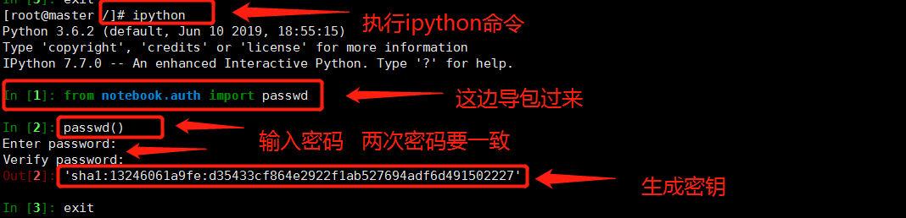
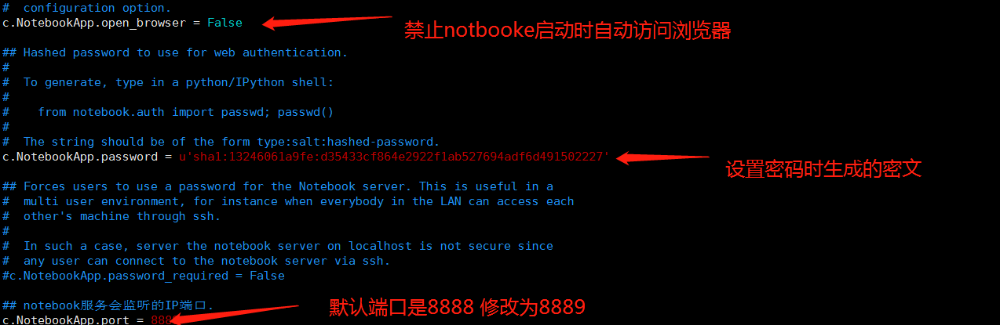
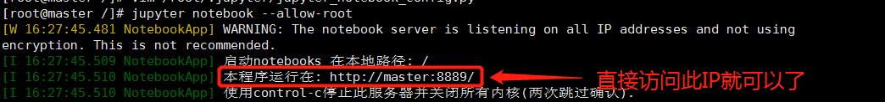
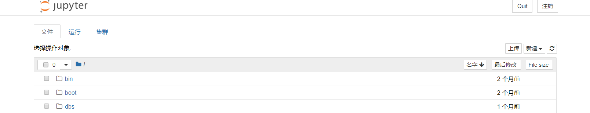

又是美好的一天 开开心心写代码
1. 安装ipython, jupyter
pip install ipython pip install jupyter
2. 生成配置文件
[root@50eb5057baac /]# jupyter notebook --generate-config
Writing default config to: /root/.jupyter/jupyter_notebook_config.py
3. 生成密码
root@50eb5057baac /]# ipython
Type 'copyright', 'credits' or 'license' for more information IPython 6.2.1 -- An enhanced Interactive Python. Type '?' for help.
In [1]: from notebook.auth import passwd
In [2]: passwd()
Enter password:
Verify password:
Out[2]: 'sha1:43b95b731276:5d330ee6f6054613b3ab4cc59c5048ff7c70f549'
In [3]: 到此 exit登出，继续往下运行

4. 修改默认配置文件
执行命令：vim /root/.jupyter/jupyter_notebook_config.py
修改以下内容并去掉前面的注释 #：
c.NotebookApp.ip='*' #设置访问notebook的ip，*表示所有IP，这里设置ip为都可访问
c.NotebookApp.password=u'sha1:5df252f58b7f:bf65d53125bb36c085162b3780377f66d73972d1' #填写刚刚生成的密文
c.NotebookApp.open_browser = False # 禁止notebook启动时自动打开浏览器
c.NotebookApp.port =8889 #指定访问的端口，默认是8888。

5. 启动jupyter notebook --no-browser
直接起动会报不建议以root身份运行.使用--allow-root绕过过.所以我们要执行以下命令：
jupyter notebook --allow-root

6. 然后你就可以在浏览器里敲入你的地址 http://yourip:8889/， 看到界面就是安装成功了
